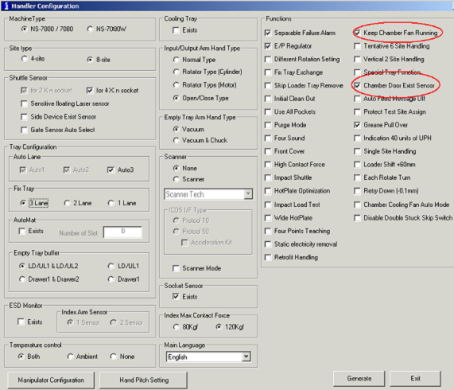
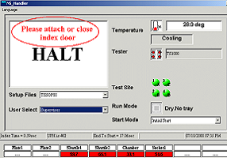
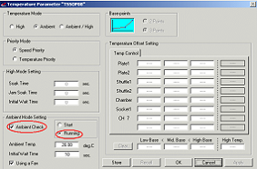

Service History
Subject: Running Ambient mode without index door
Handler Model: NS-7000 (NEC)
Controller: RC520
Date: 20 Jul 2008
Symptom
In NEC, unable to run ambient mode without the index door. Heard from Wan that Suzuki san did show it to him in Japan on this handler. But how come, upon power on with the setup file (TSSOP08) in the handler, I was unable to do it (maybe Japan change back all settings to default before sending to NEC). The attached files showed all the initial configuration that I set but still to no avail. The following are the procedure that I carried out to enable this option of "Ambient mode without index door".
After shutting down MMI, I enabled "Keep Chamber Fan Running" and "Chamber Door Exits Sensor" in "config.exe". Upon MMI start up, I enabled "Ambient Check" and "running" in "temperature parameter" tab. Upon I pressed Start, the error "Please attach or close index door" was shown on MMI. Please kindly refer to the attached photographs for a better picture.
Please kindly help me check with Suzuki san or any EPSON engineer on how to run ambient mode without index door and any steps that I had missed out. By the way, the software version is MMI ver N8.10-MNK.
|
 |
|
|
 |
 |
Action
22 Jul 2008
Asked Suzuki-san regarding this issue. According to him, he said
"Checked [Chamber Door Exit Sensor] in Config.exe and start the MMI.
Then closed the back door and turn on the cooling fan."
However I think you already tried it. So I asked him again for any other possible cause for this.
23 Jul 2008
According to EPSON, need to remove 2 pcs of chamber doors if you want to set the ambient control.
Daryl and KH tried on one NS7000 in UTAC. MMI version 1.1C13.
Only check "Chamber door exist sensor" in config.exe and handler can run in dry cycle ambient mode without the 2 doors.
Uncheck option again in config.exe and try to run without the 2 doors, error "Please attach or close index door" will show in MMI display which is normal.
Tried in SCS on monday and scenario is the same as in UTAC (that is, only removing one index door and checked "chamber door exists sensor", then it is good to run ambient without chamber door). This I also told Suzuki san, but he said that this handler in NEC has special modification, that is, there is one additional hinge sensor each on both the index doors. So we need to remove these two doors and enable "Chamber door exists sensor" in config.exe, then should be good to run ambient without doors.
28 Jul 2008
At NEC, tried out ambient mode running without 2 index doors as advised by Suzuki san. And able to run without both doors in ambient mode. (but Wan did not seem happy about the removal of 2 doors)
Cause